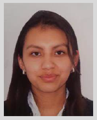

Descripcion Personal:
Tengo 20 años, soy colombiana, estudiante de Ingeniería Industrial. Estoy interesada conocer y adquirir más habilidades en el mercado laboral. Me considero una persona con amplia capacidad de adaptación, bastante organizada y responsable. Y ademas, tengo un buen manejo de herramientas ofimaticas.
Educación
Experiencias Laborales:
Del 01/2017 Al 30/08/2019 (Bogotá-Colombia)
CRISTINA SUAREZ RODRIGUEZ,
Tareas realizadas: Tabulación y organización de los datos entregados en diferentes bases de datos, de acuerdo con las solicitudes realizadas.
Habilidades:
Me considero una persona con gran sentido de la responsabilidad; capaz de actualizar los conocimientos; tengo buenas relaciones con los clientes; se gestionar el estrés y trabajo bajo presión; tengo gran capacidad de análisis. Quiero introducirme al mercado laboral y adquirir más habilidades, así que estoy abierta a las nuevas oportunidades y aprender sobre la marcha, soy buena en aprender rápidamente.
Hobbies:
Actualemente tengo un gran interes por la programacion y los cursos en linea, asi que ocupo mi tiempo libre en desarrollar cursos de ingles basico y lenguajes de programacion. Tambien paso el tiempo que me es posible jugando cosas de diseños de interiores y dibujando. Escuchar musica y leer tambien me gusta pero esos suelo hacerlos con menos frecuencia. Y el ultimo mes inicie un curso de barismo.
Seccion sobre Henry:
Inicie a estudiar Ingeniería Industrial hace casi 3 años, y cuando llegue a la materia de programacion lo encontre tan fascinante y divertido (y de alguna manera sencillo de comprender) que le agarre gusto. Inicie a usar lenguajes sencillos comp python y todo eso en cada proyecto de la universidad en que se podia. Luego inicie a considerar un cambio de carrera, pero los pensums no son atractivos y luego un amigo de un amigo escucho de esos cursos donde aprendes y pagas despues y de programacion y como por pandemia la universidad esta en pausa me propuse intentarlo. Luego vi el pensum, la duracion y como el pagarlo se vuelve practico y no quise desaprobechar la oportunidad.Mi expectativa es poder aprender bien de algo tan interesante como el desarrolo web y que si todo funciona sea un campo profesional en el que me pueda desarrollar.